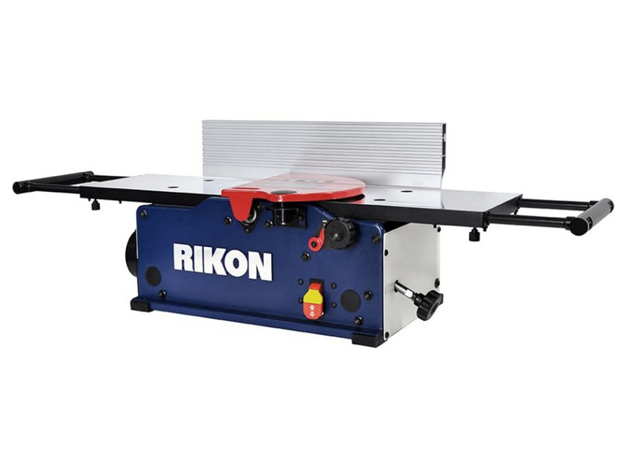

Rikon 12″ Helical-Style Benchtop Jointer (20-1200H)
Most benchtop jointers stop at 6″ or 8″, which means wide boards for tabletops and panels get ripped down before you can flatten them. Rikon’s 20-1200H handles stock from 3/4″ up to 12″ wide in a machine that still sits on a bench or cart. It has a 2″ six-row helical-style cutterhead with 24 two-edge HSS inserts (rotate an insert when it nicks instead of resetting straight knives), a 12 A motor spinning the head at 11,000 rpm, machined cast-iron tables that extend from 34″ to 54″ long, a 24″ fence that tilts to 45°, a 4″ dust port with 2-1/2″ adapter, and up to 1/8″ depth of cut. It weighs 87 lb and carries Rikon’s five-year warranty. Highland Woodworking has it at $849.99 in Rikon’s 15% sale, against $999.99. Rikon lists a 10″ minimum stock length and 1/2″ minimum thickness, so use push blocks and keep short or thin pieces off it.
SHOP PRICE: $849.99
WAS: $999.99